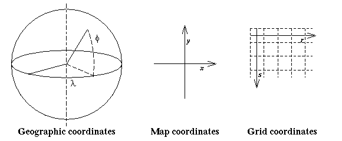

The purpose of this document is to give a brief introduction to mapping, gridding, and the associated terminology used in the mapx library at NSIDC. Along with comments in the source code, it also describes the format of the map and grid parameter files.
The ellipsoid is flattened at the poles, relative to the sphere, by about 1 part in 300. For maps of large areas (continents or bigger) using the sphere introduces no significant error. When mapping smaller areas it is not uncommon to choose an ellipsoid specifically for each area; each area is mapped on an ellipsoid with a different radius and eccentricity.
Coordinates for points on the surface of the Earth are given in latitude
and longitude. Geodetic latitude is the angle between a vertical ray at the
point and the plane of the equator. Geocentric latitude is the angle between
a ray from the center of the Earth to the point and the plane of the equator.
On a sphere, the geodetic latitude is equivalent to the geocentric latitude.
It's more common to use geodetic latitude. There is only one definition of
longitude--the angle between a ray from the center of the Earth to the point
and the plane of the Greenwich Meridian (an arbitrary reference point). Coordinates
in the map plane (x,y) are defined in the usual manner with
x horizontal and increasing to the right and y vertical and
increasing upward.
Map transformations are referred to as projections because they are commonly visualized as geometric constructs. That is, we think of the map as a piece of paper wrapped around a globe with lines emanating from points on the globe and "projected" onto the paper. It's important to note that not all map projections can be constructed in this manner.
Map projections are specified as a set of equations giving x and y in terms of latitude and longitude. The manner in which we wrap the paper around the globe determines the form of the equations. Cylindrical projections wrap the paper around in a tube, conical projections use a cone, and azimuthal projections use a flat surface. Several parameters are used in these equations to specify exactly where the surface intersects the globe, the scale or size of the globe, and the translation and rotation of the map on the plane surface.
There is no one best map projection. Each projection has different properties and different "best" uses. Two of the most important characteristics of maps are whether they are conformal or equal-area. No map projection is both, and some are neither. If a map is conformal then angles within a small area are reproduced accurately. This means that shapes are preserved. A small circle on the globe will look like a small circle on the map. In formal terms, at any point on the map the scale h along a meridian of longitude is equal to the scale k along a parallel of latitude. If a map is equal-area then a small circle placed anywhere on the map will always cover the same amount of area on the globe and the product of h and k at any point is one.
For maps that are not equal-area, hk - 1 gives a measure of the areal distortion. For maps that are not conformal, k/h gives the aspect ratio, which is a measure of shape distortion. For example, on the Polar Stereographic map true at 70N (a conformal map) the areal distortion varies from -6% at the pole to +29% at 45N and goes up to +276% at the equator while, by definition, the aspect ratio remains 1:1 everywhere. The Azimuthal Equal-Area map over the pole has, of course, no areal distortion, while the aspect ratio varies from 1:1 at the pole to 1.17:1 at 45N and goes up to 2:1 at the equator.
Tissot's indicatrix combines the two previous measures. Tissot's indicatrix is a small ellipse which shows both the scale distortion and the maximum angular deformation at a particular point on the map. See Maling or Snyder for a complete discussion.
A grid coordinate system is defined in the map plane with axes parallel to the rows and columns of the grid and units equal to the sampling interval. The grid sample locations are at the whole integer grid coordinate points. To conform to mathematical array conventions, the grid coordinates (r,s) start at (0,0) in the upper left corner with r increasing to the right, and s increasing downward (this also conforms to digital image processing conventions). A grid cell (i,j) is defined as the area between grid coordinates i-.5 and i+.5, and j-.5 and j+.5. To conform to rounding conventions, the lower bound is included in the cell while the upper bound is not (round up at .5). Note that the r coordinate corresponds to the grid column number j, and the s coordinate corresponds to the grid row number i.
Think of the grid as a map drawn on graph paper. To find a grid cell location, count graph lines over from the left and down from the top, then read the latitude and longitude off the map.

| Keyword | Format | Default | Description |
|---|---|---|---|
| Map Projection | string | required field | projection name (see list below) |
| Map Reference Latitude | decimal degrees | required field | reference latitude for map projection |
| Map Reference Longitude | decimal degrees | required field | reference longitude for map projection |
| Map Second Reference Latitude | decimal degrees | none | used by some projections (see explanation below) |
| Map Rotation | decimal degrees | 0.0 | rotation counter-clockwise |
| Map Scale | float | 1.0 | map scale factor (radius units per map unit) |
| Map Origin Latitude | decimal degrees | reference latitude | translated map origin latitude |
| Map Origin Longitude | decimal degrees | reference longitude | translated map origin longitude |
| Map Origin X | float | x coordinate of origin latitude-longitude transformed to map coordinates | translated map x origin in map units |
| Map Origin Y | float | y coordinate of origin latitude-longitude transformed to map coordinates | translated map y origin in map units |
| Map False Easting | float | 0.0 | offset map x origin in map units |
| Map False Northing | float | 0.0 | offset map y origin in map units |
| Map Eccentricity | float | Clark 1866 = 0.082271673 | eccentricity of ellipsoid |
| Map Eccentricity Squared | float | Clark 1866 = 0.00676862817822 | square of eccentricity of ellipsoid |
| Map Equatorial Radius | float | Clark 1866 ellipsoid = 6378.2064 km or equivalent authallic sphere = 6371.228 km | equatorial radius of ellipsoid or radius of sphere |
| Map Polar Radius | float | Clark 1866 ellipsoid = 6356.5838 km | polar radius of ellipsoid |
| Map Center Scale | float | 1.0 | scale factor at central meridian for Transverse Mercator |
The following parameters are used only by programs that actually draw maps.
| Keyword | Format | Default | Description |
|---|---|---|---|
| Map Southern Bound | decimal degrees | 90.00S | bottom of map, starting point for latitude graticule |
| Map Northern Bound | decimal degrees | 90.00N | top of map |
| Map Western Bound | decimal degrees | 180.00W | left side of map, starting point for longitude graticule |
| Map Eastern Bound | decimal degrees | 180.00E | right side of map |
| Map Graticule Latitude Interval | decimal degrees | 30. | graticule spacing |
| Map Graticule Longitude Interval | decimal degrees | 30. | graticule spacing |
| Map Graticule Label Latitude | decimal degrees | 0.00N | where to label meridians |
| Map Graticule Label Longitude | decimal degrees | 0.00E | where to label parallels |
| Map CIL Detail Level | integer | 1 | level of detail for coastlines, islands, and lakes |
| Map BDY Detail Level | integer | 0 | level of detail for political boundaries |
| Map RIV Detail Level | integer | 0 | level of detail for rivers |
note: For Integerized Sinusoidal, set scale to size of each row.
The reference latitude and longitude specify the original location and orientation of the map projection. The origin of the rectangular map coordinate system can be rotated and translated with the Rotation and Origin keywords. Note that a positive rotation value will rotate the coordinate system counter-clockwise around the translated map origin. This will have the effect of rotating the resulting grid of pixel values clockwise with respect to the grid that would be obtained if the rotation value were 0.
For the Cylindrical Equal-Area, and Polar Stereographic projections, the second reference latitude specifies the latitude of "true" scale. Conceptually, this is where the projection plane intersects the surface. For the Albers Conic Equal-Area and Lambert Conic Conformal projections, the conic plane is secant to the surface between the reference latitude and the second reference latitude.
The equatorial radius and eccentricity specify the surface to be mapped (usually the Earth's surface). Alternatively, the square of the eccentricity rather than the eccentricity may be specified; or both the equatorial radius and the polar radius may be specified rather than either the eccentricity or the square of the eccentricity; or the polar radius and either the eccentricity or the square of the eccentricity map be specified rather than the equatorial radius. The scale and the equatorial radius determine the map units. For example if the radius is in kilometers (as is the case with the default) and the scale is 1.0, then the map units will be kilometers. For spherical projections, the eccentricity should not be specified, and the default equatorial radius is 6371.228, i.e. the authalic sphere equivalent to the Clark ellipsoid in km. For elliptical projections, the default eccentricity is 0.082271673 and the default equatorial radius is 6378.2064, i.e. the Clark 1866 ellipsoid in km. For the WGS-84 ellipsoid in meters, use 0.081819190843 for the eccentricity and 6378137.0 for the equatorial radius. PostScript units are inches, so for PostScript output you would specify the scale in kilometers per inch. For a grid you can define the scale in terms of kilometers per grid cell. The gridding module "grids" also has parameters which specify grid cells per map unit or, alternatively, map units per grid cell. This allows the same .mpp file to be used for multiple nested grids.
Map Origin Latitude and Longitude specify the translated map origin. By default the map origin is the same as the reference latitude and longitude. Alternatively, the translated map origin can be specified by Map Origin X and Y, which take precedence over any specification of the Map Origin Latitude or Longitude. Both Map Origin X and Y must be specified if either is specified. If Map Rotation is specified, then the rotation is centered on the translated map origin. Furthermore, the specification of Grid Map Column and Row values in the Grid Parameter Definition File will locate the translated map origin at the specified column and row location within the grid.
False easting and false northing offsets are applied to the x and y map coordinates, respectively, with respect to the original map origin specified by the reference latitude and longitude. Note that Map Origin X and Y specify values after false easting and false northing offsets have been applied.
The center scale value is used only by the Transverse Mercator projection (and for the UTM projection as well). It specifies the scale factor along the central meridian.
The remaining parameters are used by programs that actually draw maps (e.g. psmap, mapenum). The southern, northern, western, and eastern bounds of the map are the starting point for the graticule and are used to speed up the search in the map outline database. They cannot be counted on to clip the map accurately. All longitudes should be in the range -180 to +360. West to east should not span more than 360 degrees. West specifies the left side of the map and east the right, not necessarily the minimum and maximum longitudes.
The latitude and longitude graticule intervals specify the spacing between graticule lines. The graticule is the overlay of latitude and longitude lines on the map. By default, a parallel is drawn every 30 degrees starting at the bottom of the map (90.00S) and a meridian is drawn every 30 degrees starting at the left side of the map (180.00W). Label latitude and longitude specify the parallel and meridian along which to draw the graticule line labels.
The last three numbers are used by the database search routine to
specify the level of detail for map lines. The level refers to the number
and size of features which will be selected, as opposed to resolution of
each feature. The higher the number, the more detail will be included. For
example, level 1 will include only the largest features, such as whole continents,
while level 2 would also include some smaller features like large lakes.
In either case the continental outline will appear with the same amount of
detail (the same jaggedness).
| Keyword | Format | Default | Description |
|---|---|---|---|
| Map Projection | string | required | Integerized Sinusoidal |
| Map Reference Longitude | decimal degrees | 0.0 | Longitude of the central meridian |
| Map Rotation | decimal degrees | 0.0 | rotation counter-clockwise |
| Map Scale | float | 1.0 | map scale factor (meters per map unit) |
| Map ISin NZone | int | 86400 | Number of equally spaced latitudinal zones |
| Map ISin Justify | int | 1.0=left | justify flag for ISin map |
| Map Origin Latitude | decimal degrees | 0.0 (= effective reference latitude) | translated map origin latitude |
| Map Origin Longitude | decimal degrees | effective reference longitude | translated map origin longitude |
| Map Origin X | float | x coordinate of origin latitude-longitude transformed to meters | translated map x origin in meters |
| Map Origin Y | float | y coordinate of origin latitude-longitude transformed to meters | translated map y origin in meters |
| Map False Easting | float | 0.0 | offset map x origin in meters |
| Map False Northing | float | 0.0 | offset map y origin in meters |
| Map Equatorial Radius | float | 6371007.181 | radius of sphere in meters |
For the ISin projection all map projection parameters have the same definitions as described above with the following exceptions.
For the ISin projection, the Map Reference Latitude parameter value is forced to 0.0; any Map Reference Latitude value supplied by the user is ignored. The Map Reference Longitude parameter is not required for the ISin projection; the default value is 0.0.
The Map ISin NZone parameter is used only by the ISin projection; it specifies the number of equally spaced latitudinal zones (i.e. "rows"), and must be 2 or larger and even. Note that this value is a characteristic of the projection only and is independent of the actual number of rows in any grid that utilizes the ISin projection. Also note that currently only the default value of 86400 is used by all ECS MODIS products (including all 1000 m, 500 m, and 250 m products) based on the ISin projection.
The Map ISin Justify parameter is used only by the ISin projection; it is used to indicate what to do with zones with an odd number of columns. If it has a value of 0 or 1, it indicates the extra column is on the right (zero) or left (one) of the projection y-axis. If the flag is set to 2, the number of columns is calculated so there is always an even number of columns in each zone. Note that currently only the default value of 1 is used by all ECS MODIS products based on the ISin projection.
By default, setting Map Projection to Integerized Sinusoidal specifies a spherical projection using a radius of 6371007.181 meters. Note that this value is currently used for all ECS MODIS products based on the ISin projection. Only a spherical projection is supported for the ISin projection.
| Keyword | Format | Default | Description |
|---|---|---|---|
| Map Projection | string | required | Universal Transverse Mercator |
| Map UTM Zone | integer | 0 | specifies value for UTM zone |
| Map Reference Latitude | decimal degrees | determined by UTM zone | determines sign of UTM zone |
| Map Reference Longitude | decimal degrees | determined by UTM zone | determines absolute value of UTM zone |
| Map Rotation | decimal degrees | 0.0 | rotation counter-clockwise |
| Map Scale | float | 1.0 | map scale factor (meters per map unit) |
| Map Origin Latitude | decimal degrees | 0 (= effective reference latitude) | translated map origin latitude |
| Map Origin Longitude | decimal degrees | effective reference longitude | translated map origin longitude |
| Map Origin X | float | x coordinate of origin latitude-longitude transformed to meters | translated map x origin in meters |
| Map Origin Y | float | y coordinate of origin latitude-longitude transformed to meters | translated map y origin in meters |
| Map False Easting | float | 500000 | offset map x origin in meters |
| Map False Northing | float | 0 for northern hemisphere; 10000000 for southern hemisphere |
offset map y origin in meters |
| Map Eccentricity | float | WGS-84 = 0.081819190843 | eccentricity of ellipsoid |
| Map Eccentricity Squared | float | WGS-84 = 0.0066943799902 | square of eccentricity of ellipsoid |
| Map Equatorial Radius | float | WGS-84 = 6378137.0 meters | equatorial radius of ellipsoid (or radius of sphere if eccentricity = 0) in meters |
| Map Polar Radius | float | WGS-84 = 6356752.314245 meters | polar radius of ellipsoid in meters |
| Map Center Scale | float | 0.9996 | scale factor at central meridian |
For the UTM projection all map projection parameters have the same definitions as described above with the following exceptions.
The UTM zone value is used only by the UTM projection. Zones are in the range 1 to 60 for the northern hemisphere, and -1 to -60 for the southern hemisphere. If the UTM zone is 0, then the hemisphere and absolute value of the zone are determined by the reference latitude and longitude, respectively. If the UTM zone is not 0, then the reference latitude and longitude are not required and are ignored if present. The effective reference latitude value for every UTM zone is 0 (the equator); the effective reference longitude value is the central meridian of the zone starting at 177W for zones 1 and -1, 171W for zones 2 and -2, and so on until 177E for zones 60 and -60. Note that either Map UTM Zone must be non-zero or both Map Reference Latitude and Map Reference Longitude must be specified.
The default Map Origin Latitude and Longitude values are determined by the effective reference latitude value, which is always 0, and the effective reference longitude value, which is determined from the UTM zone, either as supplied in the Map UTM Zone value or as derived from the Map Reference Longitude value.
By default, setting Map Projection to Universal Transverse Mercator specifies an ellipsoidal projection using the WGS-84 ellipsoid. To specify a spherical UTM projection, set Map Eccentricity to 0, and set Map Equatorial Radius to the radius of the sphere in meters.
For the UTM projection, the default false easting is 500000 (five hundred thousand) meters. For northern hemisphere UTM zones, the default false northing is 0 meters, and for southern hemisphere UTM zones, the default false northing is 10000000 (10 million) meters. Note that these values assume that Map Equatorial Radius is in meters and that Map Scale is 1.0. Note also that Map Origin X and Y specify values after false easting and false northing offsets have been applied. For example, for the UTM projection for a southern hemisphere UTM zone, specifying a Map Origin X value of 175000 will set the translated map origin to 325000 (500000 - 175000) meters west of the central meridian for the UTM zone, and specifying a Map Origin Y value of 5325000 will set the translated map origin to 4675000 (10000000 - 5325000) meters south of the equator.
The center scale value specifies the scale factor along the central meridian; the default for the UTM projection is 0.9996.
| Keyword | Format | Default | Description |
|---|---|---|---|
| Grid Width | integer | required field | number of columns in grid |
| Grid Height | integer | required field | number of rows in grid |
| Grid Map Origin Column | float | 0.0 | column coordinate of map origin |
| Grid Map Origin Row | float | 0.0 | row coordinate of map origin |
| Grid Cells per Map Unit | float | 1.0 | sets both column and row scale |
| Grid Columns per Map Unit | float | 1.0 | sets column scale if not already set |
| Grid Rows per Map Unit | float | 1.0 | sets row scale if not already set |
| Grid Map Units per Cell | float | 1.0 | alternative method to set both column and row scale |
| Grid Map Units per Column | float | 1.0 | sets column scale if not already set |
| Grid Map Units per Row | float | 1.0 | sets row scale if not already set |
| Grid MPP File | string | none | name of .mpp file, map projection parameters can also be specified in the same file with the grid definition parameters |
Gonzalez, Rafael C. and Paul Wintz. 1987.Digital Image Processing.Second edition. Reading, MA: Addison-Wesley.
Maling, D. H. 1992. Coordinate Systems and Map Projections. Second edition. Elmsford, N.Y.: Pergamon Press.
Snyder, John P. 1987.Map Projections, A Working Manual. U. S. Geological Survey Professional Paper 1395. Department of the Interior. Washington, D. C.
$Revision: 1.4 $